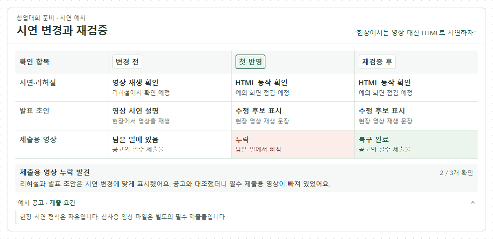
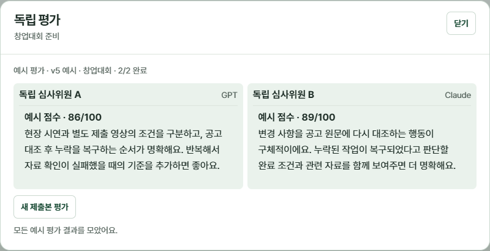

프로젝트를 진행하는 것보다 기록을 다시 맞추는 일이 번거롭다
공모전, 연구실 실험, 수업 팀 과제, 개인 프로젝트를 병행하는 학생이나 소규모 팀은 대개 여러 도구를 사용합니다. 계획은 일정표에, 실제 작업은 코드나 회의록에, 결정은 메신저에, AI와 검토한 내용은 별도 채팅에 남습니다.
방향이 바뀌면 할 일뿐 아니라 문서와 제출 조건도 다시 살펴봐야 합니다. 프로젝트가 끝난 뒤에는 자신이 무엇을 왜 했는지, 어떤 문제가 있었고 어떻게 확인했는지 여러 자료를 다시 찾아야 합니다.
진행 중
계획과 실제 작업 상태가 달라지고, 결정의 영향을 받는 자료가 누락될 수 있습니다.
검토할 때
AI마다 기준과 프롬프트를 반복 입력하고, 서로 다른 버전에 대한 평가를 따로 정리해야 합니다.
여러 프로젝트를 병행할 때
현재 목표일, 남은 단계, 마지막으로 한 일을 다시 파악하는 데 시간이 듭니다.
완료한 뒤
개인 기여, 의사결정의 근거, 결과물을 포트폴리오에 쓰기 위해 작업 경위를 복원합니다.
계획과 작업 기록, 검토 결과, 산출물이 각각 따로 존재하면 프로젝트의 실제 상태와 그 근거가 일관되게 관리되지 않습니다. 이 서비스는 사용자가 이미 남기는 작업과 자료를 활용해 그 반복 확인을 줄이는 것을 목표로 합니다.
왜 이 문제가 중요할까?
기존 공개 조사에서는 정보 탐색의 부담과 팀 협업의 어려움, AI 결과를 다시 검증할 필요성이 관찰되었습니다.
Microsoft, Work Trend Index 2023
31개국 31,000명 대상 조사 전체 표본
대학생 팀 프로젝트에서도 협업 문제는 관찰된다
Bakir, Humpherys, Dana(2020)는 경영정보시스템 수업의 학생 팀 프로젝트를 조사했습니다. 첫 연구(120명)에서 소통, 참여, 협업, 책임과 상호작용 부족이 주요 문제로 보고되었습니다. 두 번째 연구(129명)에서는 Slack과 Google Docs를 활용한 뒤 대면 수업 학생의 일부 협업 문제가 줄었지만 온라인 수업에서는 동일한 개선이 관찰되지 않았습니다. 연구 원문 정보
위 수치는 다른 연구기관과 기업의 공개 조사입니다. 이 서비스 자체의 설문 결과가 아니며, 직장인·개발자 조사 수치를 대학생 전체에 그대로 적용할 수 없습니다. 특정 수업 사례도 모든 프로젝트의 문제를 대표하지 않습니다. 현재 저장소에서 자체 사용자 설문의 원자료는 확인되지 않았으며, 실제 사용 의향과 문제 빈도는 아래 설문으로 추가 검증할 예정입니다.
하나의 프로젝트에 계획과 작업의 근거를 연결한다
사용자는 프로젝트마다 목표, 계획, 관련 자료의 범위를 정합니다. 이후 작업이나 결정이 바뀔 때 한 줄로 남기면 에이전트가 어떤 단계와 자료에 영향을 주는지 판단합니다. 필요하면 독립 평가를 요청하고, 채택한 의견을 후속 작업에 연결합니다.
| 관리할 정보 | 저장하는 내용 | 활용 방식 |
|---|---|---|
| 계획 | 목표일, 단계, 완료 조건 | 현재 진행과 남은 일 판단 |
| 작업 로그 | 날짜, 원문, 결정, 개인 역할, 연결된 자료 | 계획 갱신의 근거, 회고 |
| 자료·산출물 | 파일 위치, 버전, 관련 단계와 설명 | 수정 후보 탐색, 결과물 검토 |
| 문제와 해결 | 문제, 대응, 확인 결과 | 동일 사례를 발표 및 소개에 재사용 |
| AI 검토 기록 | 평가 대상, 기준, 모델, 지시, 점수·근거 | 버전별 독립 평가와 수정 후보 관리 |
자료 분류, 이미 저장된 관계 조회, 완료율 계산, 화면 표시와 세션 실행 관리는 일반 프로그램으로 처리합니다. AI 에이전트는 문맥에 따라 작업과 결정의 차이를 구분하고, 명시적인 연결이 없는 자료까지 탐색해 영향 범위와 확인할 조건을 판단합니다.
전체 기능 안내
V5의 프로젝트 홈, 상세, 산출물, AI 프리셋과 독립 평가를 실제 이용 순서에 따라 정리했습니다. 화면에 표시되는 예시와 향후 모델을 연결할 동작을 구분합니다.
프로젝트 홈과 태그
대회, 연구실, 수업, 개인 프로젝트, 교내 활동, 장학금·취업 준비 등의 프로젝트를 종류별로 확인합니다. 태그로 찾고, 목표일·경과 주차·남은 기간·단계 완료율을 비교합니다. 완료한 프로젝트는 별도로 펼쳐볼 수 있습니다.
작업 활동 캘린더
작업 기록이 남은 날짜를 확인합니다. 그날 작업한 프로젝트 수에 따라 색이 진해지며 날짜를 선택하면 연결된 프로젝트를 볼 수 있습니다. 활동량이나 노력의 절대적인 측정 지표는 아닙니다.
아이디어 메모와 프로젝트 전환
아직 시작하지 않은 아이디어를 메모로 보관하고, 실행하기로 결정하면 프로젝트 유형을 선택해 계획을 작성합니다. 시안에서는 제목·메모·유형·목표일·단계와 완료 조건을 편집할 수 있습니다.
목표와 단계별 계획
목표, 목표일, 단계와 각 단계의 완료 조건을 관리합니다. 진행 중인 단계와 완료된 단계의 내용을 펼쳐 근거와 남은 일을 확인합니다. 완료율은 완료 단계 수를 전체 단계 수로 나눈 값으로, 예상 소요 시간이나 난이도의 비율이 아닙니다.
한 줄 작업 기록과 자료 연결
사용자가 작업과 결정을 자연어로 남기면 날짜와 원문을 기록하고, 지정한 프로젝트 폴더에서 관련 파일과 근거를 찾습니다. 끝낸 작업, 팀의 확정된 결정, 아직 시험 중인 대안을 구분합니다. 로그에서 연결된 파일과 관련 설명을 확인할 수 있습니다.
변경 영향 판단과 재검증
결정이 바뀌면 관련 계획, 완료 조건, 리허설 항목과 초안을 찾아 수정해야 할 위치를 표시합니다. 임시 반영한 내용을 사용자 요청 및 공고와 대조하여 누락된 필수 작업을 복구하고 다시 확인합니다. 확인할 수 없는 자료는 미확인으로 남깁니다.
문제 해결과 개인 기여 기록
어떤 문제가 있었고 어떻게 대응했으며 결과를 어떻게 확인했는지 근거와 함께 남깁니다. 팀이 결정한 내용과 내가 수행한 작업을 구분하며, 동일한 사례를 이후 발표나 프로젝트 소개에 연결합니다.
AI 프리셋
프로젝트 유형과 요청에 맞춰 진행 정리·독립 평가·검수에 쓸 모델 및 역할, 지시문을 구성하는 기능입니다. 설정을 저장하고 필요한 프로젝트에 연결하며, 각 모델과 프롬프트를 열어 확인할 수 있습니다. 예를 들어 공모전용으로 문제 정의와 시연 근거를 보는 심사위원을 따로 설정합니다.
독립 평가와 평가 이력
제출본과 공통 기준을 한 번 입력하면 지정한 심사위원이 각자 별도 세션에서 평가하도록 설계합니다. 모두 완료된 뒤 결과를 모아 보고, 평가 대상 버전별로 과거 결과를 열 수 있습니다. 채택한 의견은 관련 계획이나 수정 후보로 연결합니다.
산출물과 공개 포트폴리오
프로젝트 완료 후 기록과 자료에서 역할, 주요 결정, 문제 해결 과정, 확인 결과를 모아 소개 초안을 준비합니다. 방문자가 보게 될 형태를 미리보고, 승인한 문안과 자료만 공개 대상으로 확정합니다. 내부 기록이 자동으로 모두 공개되는 구조는 아닙니다.
이전 기획에서 검토한 캘린더 외부 연동, CV 연결, 개인 작업 방식 학습은 V5의 핵심 시연에 포함된 실동작으로 주장하지 않습니다. 별도 확장 후보로 구분합니다.
하나의 변경 결정이 프로젝트에 반영되는 과정
창업대회 준비 중인 팀에서 다음과 같은 한 줄을 남기는 상황을 가정합니다.
“현장에서는 영상 대신 HTML로 시연하자. 기본 화면은 연결했고 예외 화면은 확인 중이야.”
- 사실과 결정을 분리한다.기본 화면 연결은 수행한 작업, 시연 방식 변경은 확정된 결정, 예외 화면은 아직 확인할 항목으로 기록합니다.
- 영향을 받는 자료를 탐색한다.계획과 연결된 리허설·발표 초안을 먼저 읽고, 연결되지 않은 자료가 있다면 지정 폴더에서 공고와 관련 파일을 추가로 찾습니다.
- 계획과 산출물의 수정 후보를 갱신한다.영상 재생 확인을 HTML 동작 확인으로 바꾸고 예외 화면은 남은 일로 유지합니다. 발표 초안의 기존 문구는 수정 후보로 표시합니다.
- 원래 요구사항에 다시 대조한다.예시 공고에 별도의 심사용 영상이 필수인데 첫 반영에서 빠졌다면, 이전 계획의 마감과 첨부 조건을 복구하고 남은 일과 단계 완료율을 다시 확인합니다.
- 결과와 근거를 전달한다.무엇을 갱신했고 어떤 조건을 유지했는지 보여줍니다. 원문을 확인하지 못하면 마지막 확인 상태를 유지하고 미확인 항목을 표시합니다.

| 항목 | 변경 전 | 첫 반영 | 재검증 후 |
|---|---|---|---|
| 리허설 | 영상 재생 | HTML 확인 | HTML 확인 유지 |
| 발표 초안 | 영상 재생 문장 | 수정 후보 | 수정 후보 유지 |
| 필수 제출 영상 | 남은 작업 | 누락 | 기한·조건과 함께 복구 |
같은 ‘영상’이라는 단어가 다른 용도를 뜻하므로 단순 일괄 수정과는 차이가 있습니다. 이 사례에서 에이전트의 역할은 의미를 구분하고 결과를 검증하는 것입니다. 재검증 시안 직접 열기 · 계획·산출물 연결 시안 열기
프로젝트마다 AI를 설정하고, 같은 기준으로 독립 평가한다
검토가 필요할 때마다 동일한 제출 자료와 기준을 여러 대화에 붙여넣는 대신 프로젝트에 평가 설정을 저장하는 방식입니다.
진척 상태 확인
현재 계획과 작업 기록을 읽고 진행 및 남은 일을 정리합니다.
서로 다른 관점
공통 기준을 적용하되 평가자별 역할과 모델을 분리합니다.
제출 조건 확인
프리셋의 체크리스트에 따라 필요한 서류와 형식, 관련 근거를 살핍니다.
독립 평가의 작동 순서
- 제출본과 기준 고정모델, 심사위원 역할·지시와 평가 대상 버전을 함께 저장합니다. 평가 도중 프리셋을 바꿔도 그 평가에는 처음 설정이 적용됩니다.
- 개별 세션 실행각 세션에는 공통 제출본·기준과 해당 심사위원의 설정만 전달합니다. 이전 대화와 다른 심사위원의 결과는 입력에 포함하지 않습니다.
- 개별 결과 검증실제 모델 연동 시 배점 범위, 총점 합계, 근거의 원문 위치를 확인합니다. 무응답이나 형식 오류는 같은 입력으로 해당 세션만 재시도하고 계속 실패하면 미완료를 표시합니다.
- 모든 평가가 완료된 뒤 비교평가자의 점수와 근거를 같은 화면에서 확인합니다. 제출본이나 기준을 변경한 평가는 별도 기록으로 보존합니다.
- 채택한 의견을 작업에 연결평가 결과를 무조건 자동 적용하지 않고 사용자가 채택한 의견을 관련 단계나 수정 후보에 연결합니다.

V5 데모 → 창업대회 준비 → 독립 평가 → 예시 불러오기 → 자동 평가 시작. 일부 세션만 완료된 때와 모든 세션 완료 후의 화면을 비교할 수 있습니다. 홈의 AI 프리셋 관리에서도 설정 예시를 확인할 수 있습니다.
세션 격리는 평가 간 직접적인 결과 공유를 줄이는 설계입니다. 그것만으로 모델의 편향이나 근거 해석 오류가 사라지는 것은 아니므로 최종 판단은 사용자가 내립니다.
기존 방식과 어떻게 다른가?
이 기획은 기존 도구를 대체해야 한다는 주장보다 프로젝트의 여러 단계에 공통으로 쓰이는 상태와 근거를 관리한다는 데 초점을 둡니다.
| 일반적인 사용 방식 | 이용자가 추가로 해야 할 일 | 이 서비스가 제안하는 방식 |
|---|---|---|
| 할 일·일정 관리 | 결정이 바뀌면 관련 단계와 문서를 찾아 갱신 | 변경 요청에서 영향 범위와 완료 조건을 판단 |
| 파일·문서 저장 | 과거 결정과 개인 기여를 재구성 | 작업 기록과 파일의 근거를 연결 |
| 범용 AI 채팅 | 새 검토마다 필요한 맥락과 기준을 다시 전달 | 프로젝트별 상태와 평가 설정을 보존하고 재사용 |
| 포트폴리오 제작 | 완료 후 자료를 다시 모으고 소개 문안 작성 | 작업 중 축적한 근거를 소개 초안에 활용 |
기존 서비스도 검색·AI 자동화·프로젝트 관리 기능을 제공할 수 있습니다. 표는 대표적인 사용 방식과 기획에서 제안하는 흐름의 비교이지 특정 제품에 기능이 없다는 주장이나 성능 우위의 증명이 아닙니다.
현재 확인한 범위와 앞으로 검증할 것
현재 클릭 시안
홈, 태그, 아이디어 및 계획 편집, 작업 상세와 산출물 미리보기, 프리셋 관리, 평가 진행 및 결과 공개 흐름을 예시 데이터로 제공합니다.
기획된 Agent 동작
실제 파일 탐색, 영향 범위 판단, 계획·자료 갱신, 원문 대조, 프리셋 구성 및 외부 AI 모델 실행은 모델과 도구를 연결한 뒤 검증할 범위입니다.
비교 검증 계획
동일한 모델, 파일 권한, 초기 계획, 발표 초안, 예시 공고와 변경 요청을 범용 에이전트 및 이 기획의 작업 흐름에 각각 제공하는 방식을 제안합니다. 올바른 변경 항목과 유지 조건을 먼저 정하고 아래 지표를 비교합니다.
| 검증 항목 | 측정 지표 |
|---|---|
| 영향 범위와 상태 판단 | 빠뜨린 수정 위치, 과잉 수정, 잘못 완료 처리한 단계 수 |
| 오류 복구 | 누락을 스스로 발견·복구했는지, 추가 사용자 입력 횟수 |
| 독립 평가 | 입력 고정, 세션별 정보 분리, 평가 완료 상태와 결과 공개 시점 |
| 기록 재사용 | 소개 문안에서 근거를 열 수 있는지, 승인 범위 밖의 자료가 공개되는지 |
현재는 비교 실험 결과나 시간 절감 효과를 주장하지 않습니다. 실제 사용자에게 이 서비스가 유용한지 아래의 사전 설문과 후속 체험 의견으로 확인하는 것이 다음 단계입니다.
짧은 사용자 설문
최근 진행한 프로젝트를 기준으로 답해 주세요. 설문은 기획의 필요성과 어떤 기능을 우선해야 하는지 파악하기 위한 것이며, 선택 항목이 마음에 들지 않아도 솔직하게 답할 수 있습니다.
개인정보 안내: 이름, 이메일, 학교명 등은 요구하지 않습니다. 이 페이지는 정적 페이지로 서버에 답변을 전송하거나 자동 수집하지 않습니다. 답변을 작성한 뒤 복사하거나 텍스트 파일을 저장하고, 페이지를 공유한 사람에게 직접 전달해 주세요. 자유 답변에 개인·팀의 비공개 정보는 적지 않아도 됩니다.
설문 결과를 해석할 때 응답자 수, 모집 방식, 문항별 응답 수를 함께 기록하고, 실제 사용 의향과 실제 이용 결과는 구분할 예정입니다. 지인 중심의 소규모 편의 표본은 전체 학생을 대표하지 않습니다.
참고 자료와 원본 기획
외부 조사·연구
- Microsoft (2023), Work Trend Index: Will AI Fix Work?
- Atlassian (2024), State of Teams 2024.
- Stack Overflow (2025), Developer Survey: AI.
- Bakir, N., Humpherys, S., & Dana, K. (2020). Students’ Perceptions of Challenges and Solutions to Face-to-Face and Online Group Work. Information Systems Education Journal, 18(5), 75–88.
프로젝트 원문
V5 기획안 · 동작·검증 기준 · 변경 후 재검증 상세 · 전체 저장소
이 보고서는 2026년 11월 28일 기준 V5 기획안과 클릭 시안, 해당 기획이 이어받은 V4 재검증 사례를 처음 보는 독자에게 설명하기 위한 자료입니다. 외부 조사와 신규 설문 문항은 필요성 검토를 위해 추가했습니다.
V5 데모 열기